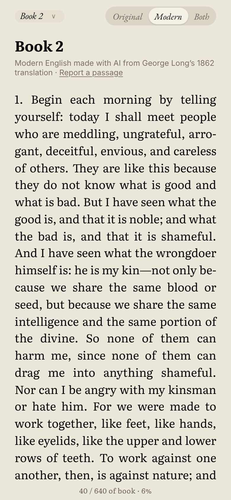
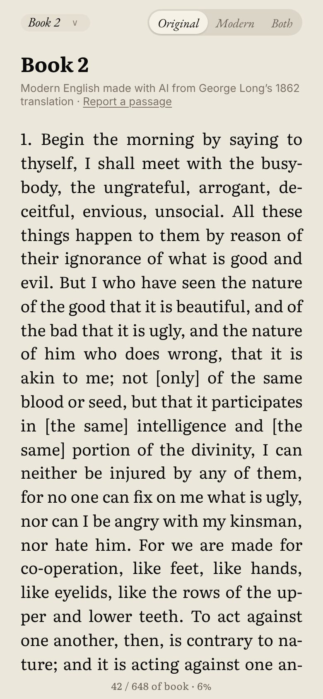
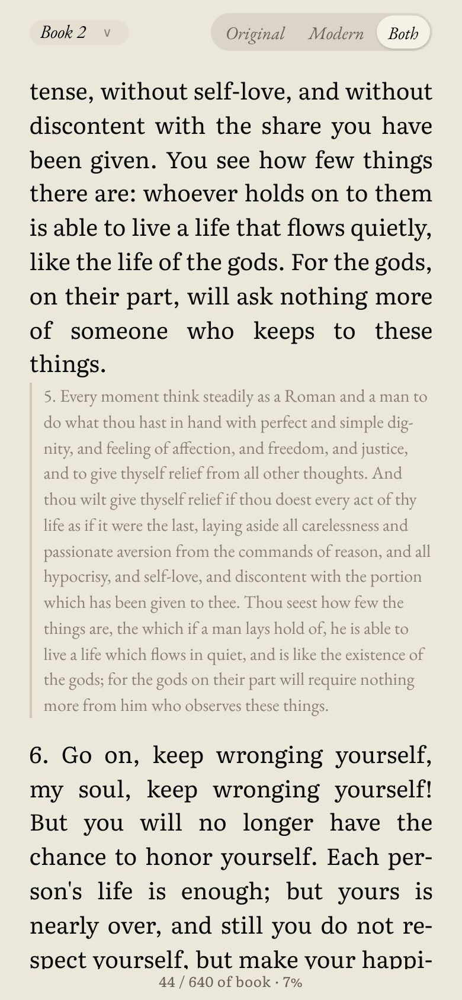
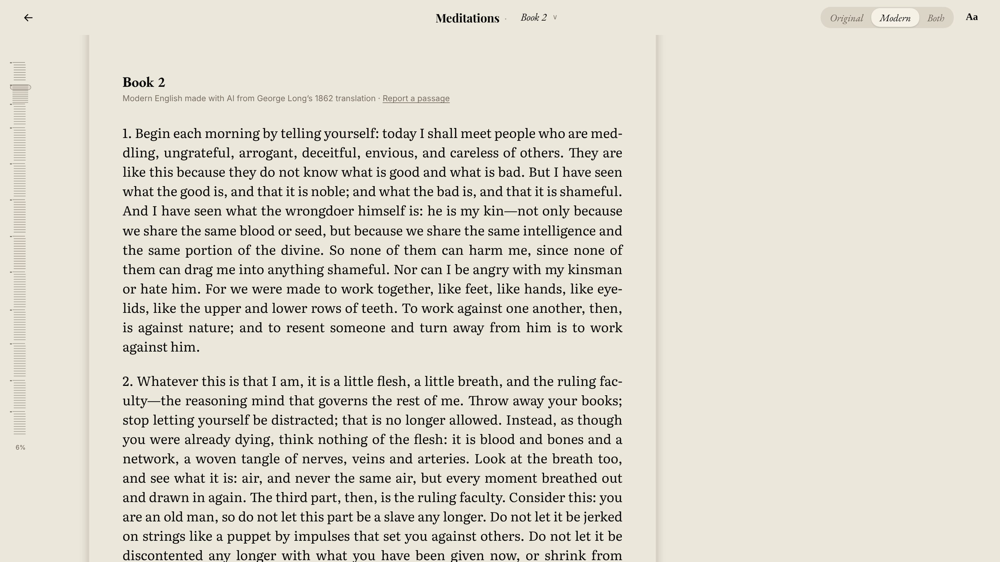
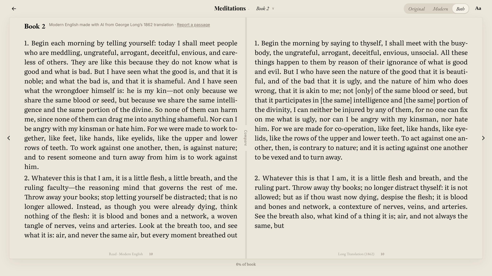

Free reading mode
The existing reader with everything that asks for something taken away. Links from the modern-English page open here.
Phone

Modern. The top bar is the chapter chip and Original · Modern · Both. The source line sits under the chapter title.

Original. One tap, same place.

Both. Each paragraph in modern English, the original under it in small grey type.
Desktop

Modern. The switch replaces Notebook, Play and Menu. Aa stays.

Both. The reader's existing side-by-side view.
Taken away
- Play, Menu, Notebook, Primer, Summary, Quiz me, Catch me up, Read with an angle
- The "Highlight any passage" hint and Explain
- Sign-in, Premium and "keep your place" prompts. The place is kept on the device.